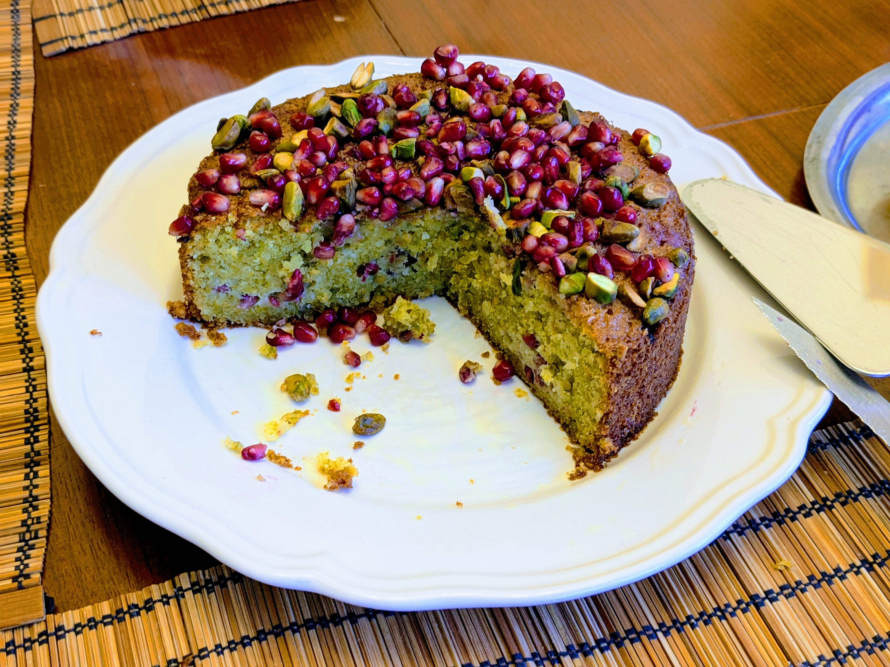

Gâteau pistache-grenade

Pour un bon dessert pour 8-10 personnes :
- 225g de beurre (ramolli)
- 160g de sucre
- Le zeste d'un citron (ou d'une orange, ou même 2)
- Quatre œufs
- 70g de farine
- Une cuillère à café de levure chimique
- Une belle pincée de sel
- Entre 230g et 250g de pistaches, non rôties et non salées
- Une grenade
- Battre le beurre au batteur électrique dans un saladier jusqu'à ce que ça soit tout léger et aéré. Ajouter le sucre et le zeste de citron et continuer à battre jusqu'à ce que ça cesse de grossir de volume (ça prend bien quelques minutes, il faut que le résultat soit vraiment léger).
- Mixer ensemble 200g de pistaches avec 10g de farine jusqu'à ce que ça fasse une poudre assez fine (il ne faut pas qu'il reste trop de gros morceaux, mais il ne faut pas non plus que ça commence à faire une pâte).
- Mélanger la farine, la levure chimique, le seul, et les pistaches dans un petit bol. Ajouter le tout avec le mélange beurre / sucre, et mélanger doucement à la cuillère en bois jusqu'à ce qu'il n'y ait plus de trace de farine.
- Extraire un tiers des graines de la grenade. Faire préchauffer un four à 160°C à chaleur tournante. Beurrer un moule (idéalement, rond, de 20cm, en métal, avec des bords hauts) et recouvrir le fond de papier sulfurisé. Mettre la pâte à gâteau dans le moule, aplatir le dessus avec une spatule, et disposer par-dessus les graines de grenade en appuyant légèrement.
- Enfourner pour 40 minutes. Pendant ce temps, extraire le reste des graines de grenade ; en réserver la moitié et faire du jus avec l'autre moitié en la passant au mixeur puis à travers une passoire fine. Hacher grossièrement les 30-50g de pistaches restantes.
- Au bout des 40 minutes de cuisson, ajouter les pistaches hachées sur le dessus du gâteau pour qu'elles toastent un peu. Remettre à cuire 10-15 minutes, jusqu'à ce qu'un cure-dents inséré au milieu ressorte sec.
- À la sortie du four, arroser le gâteau du jus de grenade. Laisser tiédir 10 minutes dans le moule, puis laisser refroidir entièrement sur une grille. Parsemer le dessus du reste des graines de grenade avant de servir.
Remarque : on peut remplacer jusqu'à 50g des pistaches mixées par de la poudre d'amandes.